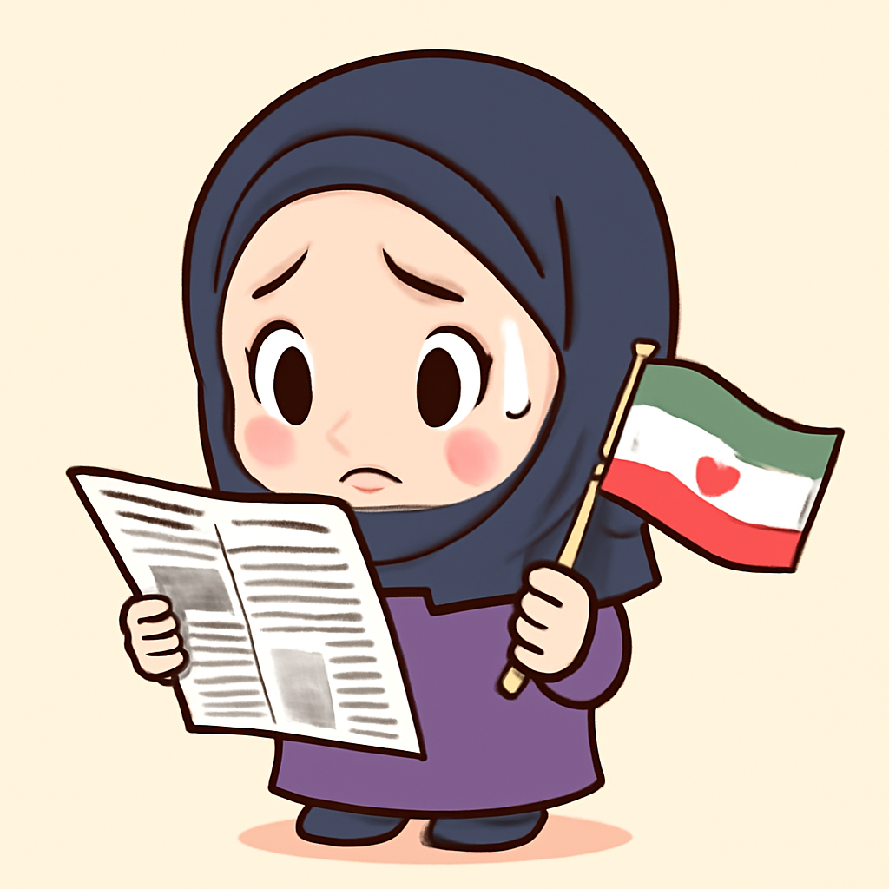
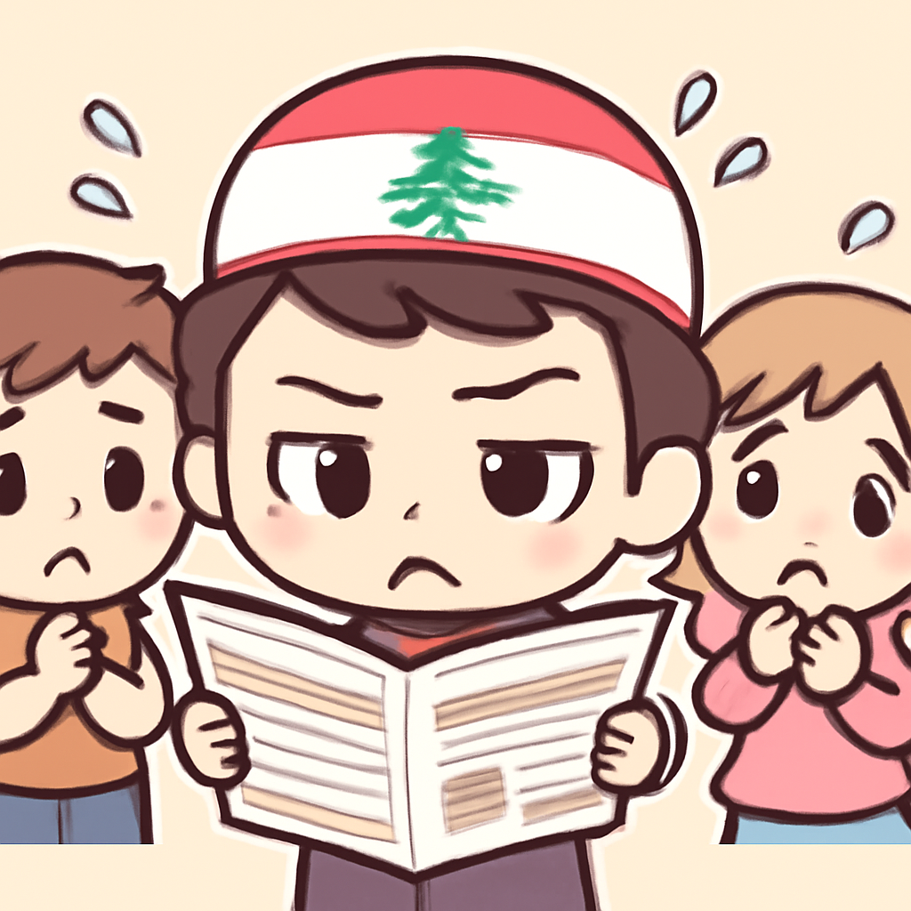
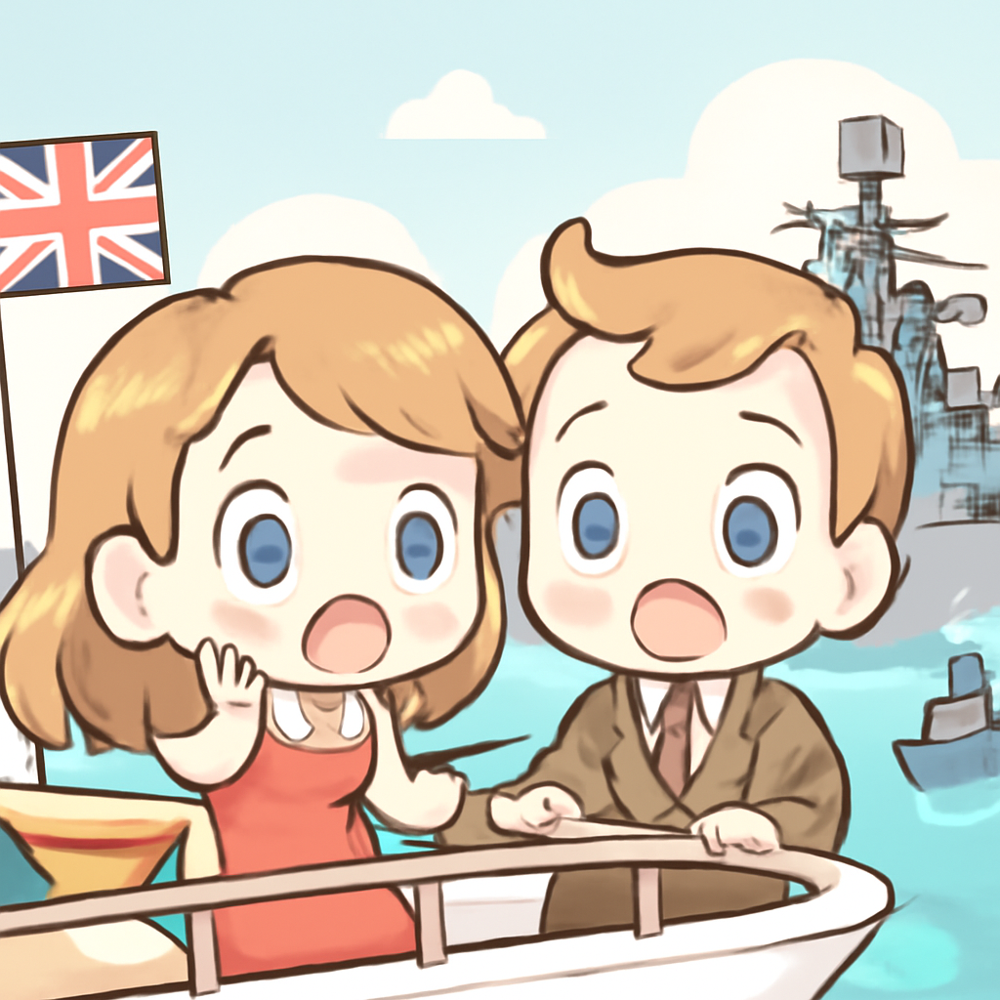
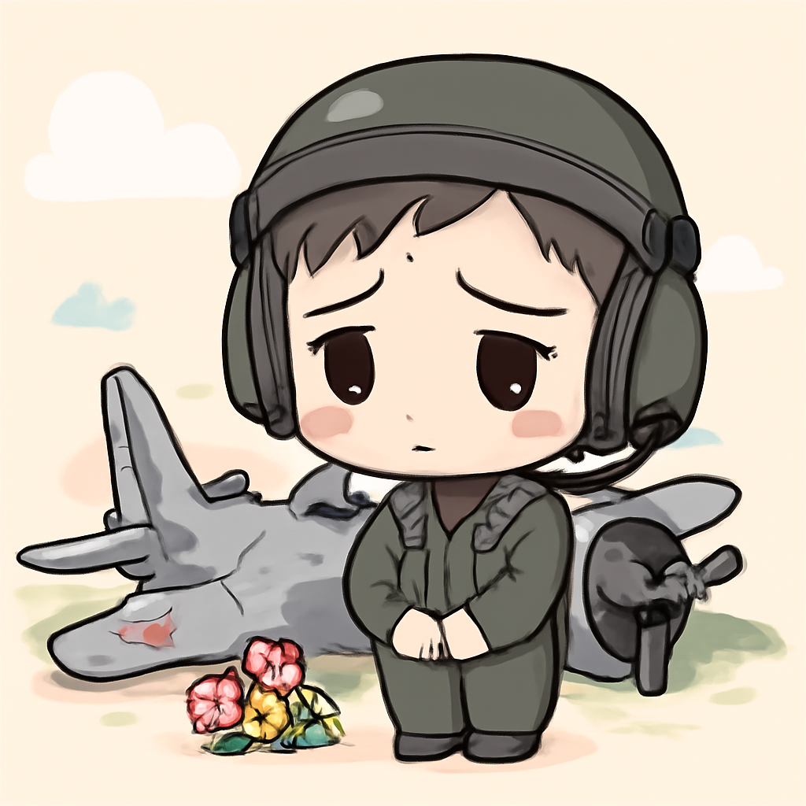

其一 · 伊朗德黑蘭 · 伊朗與美國達成協議
德黑蘭與華府達成協議，但民眾仍存疑。

在德黑蘭，伊朗與美國達成了一項重要協議，旨在降低價格和減少戰爭恐懼。雖然官方宣稱這是一場勝利，但對許多伊朗人來說，這只是生活所迫的必要之舉。這項協議的後續發展將影響地區的穩定性，讓我們拭目以待。
🔗 原始新聞 ↗
2026-06-17 · 以古觀今，以笑抗愁
德黑蘭與華府達成協議，但民眾仍存疑。

在德黑蘭，伊朗與美國達成了一項重要協議，旨在降低價格和減少戰爭恐懼。雖然官方宣稱這是一場勝利，但對許多伊朗人來說，這只是生活所迫的必要之舉。這項協議的後續發展將影響地區的穩定性，讓我們拭目以待。
🔗 原始新聞 ↗
黎巴嫩人對美伊新協議仍持懷疑態度。

在黎巴嫩，隨著美國和伊朗達成停火協議，許多人對這項協議能否真正結束以色列與真主黨的衝突表示懷疑。這場衝突已持續多年，民眾對未來感到困惑，期待真正的和平能夠到來，而不是再一次的空談。
🔗 原始新聞 ↗
英國調查俄軍艦在海峽開火事件。

英國在英吉利海峽調查一起俄羅斯軍艦開火事件，該事件涉及一對退休夫婦的遊艇。儘管他們聲稱已改變航向，但俄軍艦仍然開火，這讓人們開始擔心國際水域的安全問題。這樣的事件不僅是軍事挑釁，也是對國際法的挑戰。
🔗 原始新聞 ↗
加州一架B-52轟炸機墜毀，八人不幸喪生。

在加州，一架美國空軍的B-52轟炸機在例行測試任務中墜毀，導致八人遇難。這起悲劇突顯了軍事訓練的危險性，並引發了對飛行安全的關注。希望未來能有更好的安全措施，讓這樣的悲劇不再發生。
🔗 原始新聞 ↗
越南警方救回400隻被盜貓，九人被捕。
在越南，警方破獲了一起貓咪盜竊案，成功救回超過400隻貓，並逮捕了九名嫌疑人。這一事件引發社會對動物權益的討論，也讓人感受到保護小生命的重要性。希望這些貓咪早日回到主人身邊，重拾幸福生活！
🔗 原始新聞 ↗